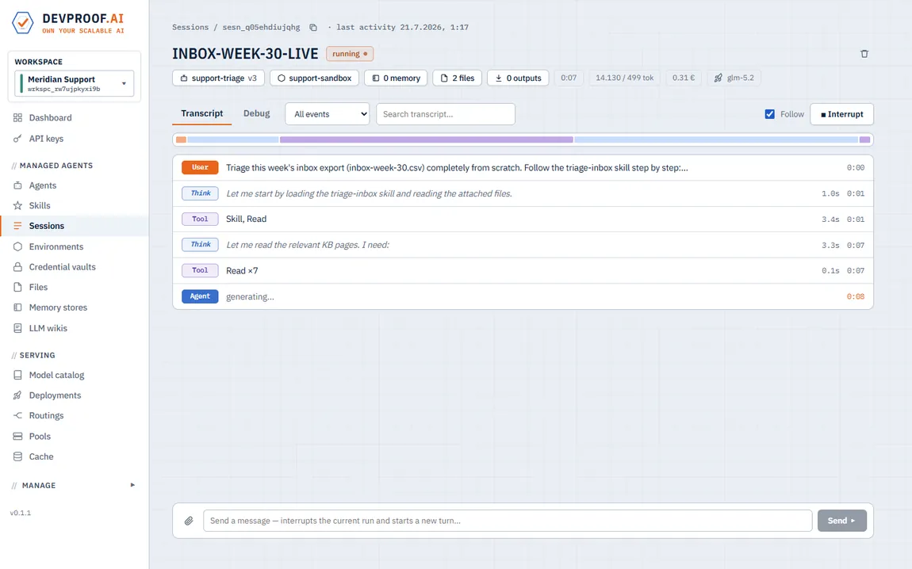
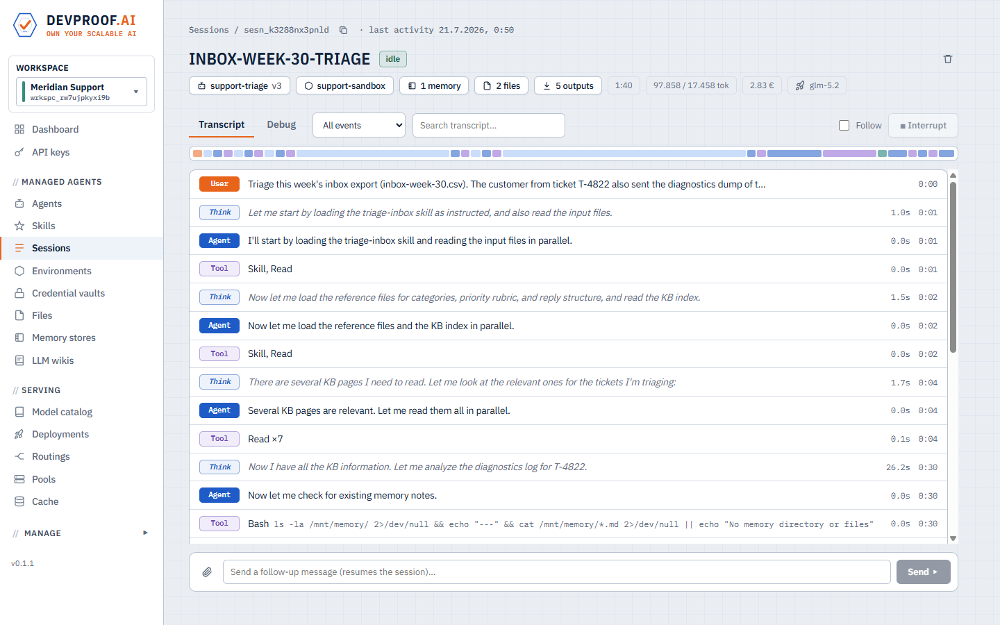
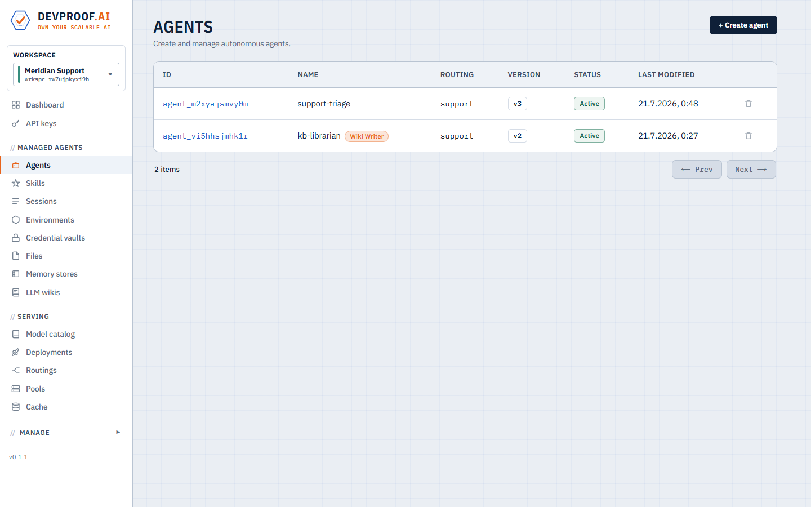
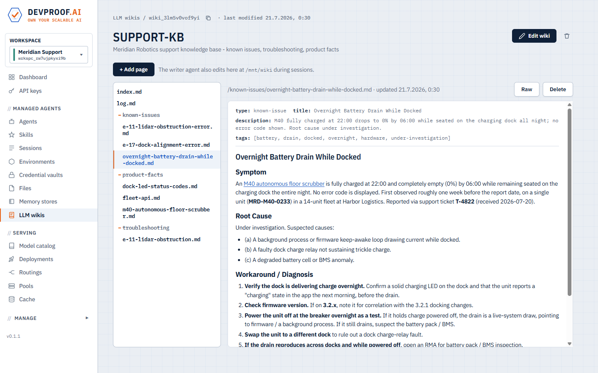
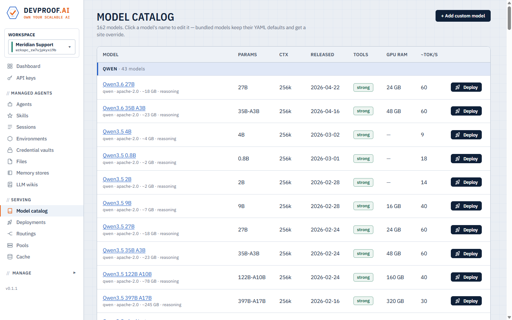
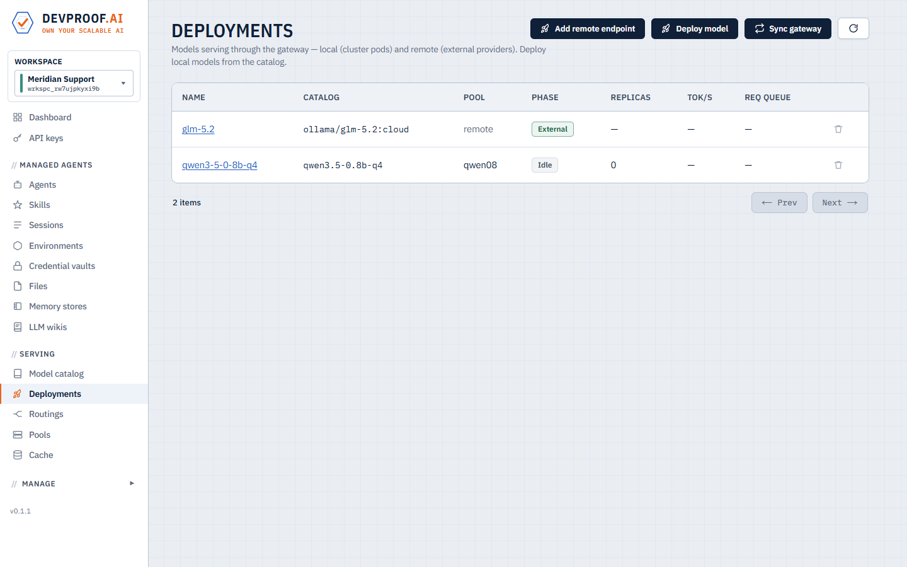
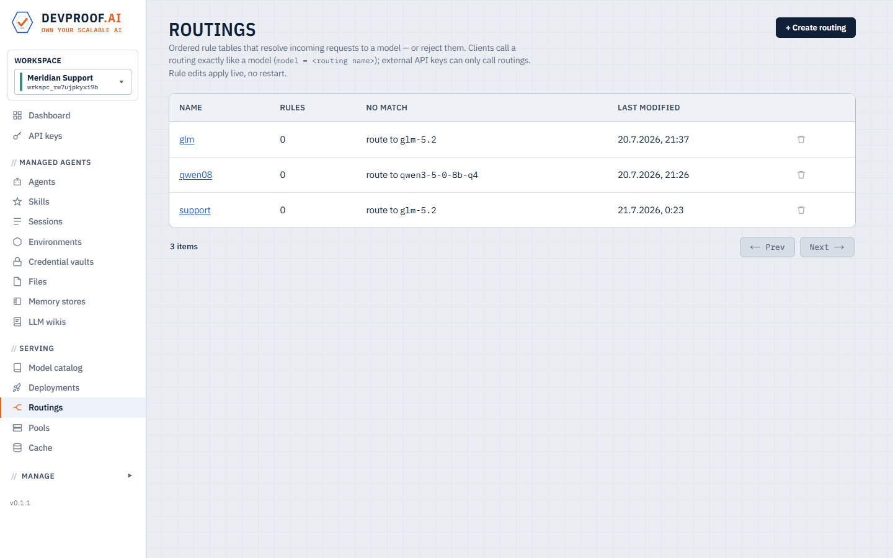
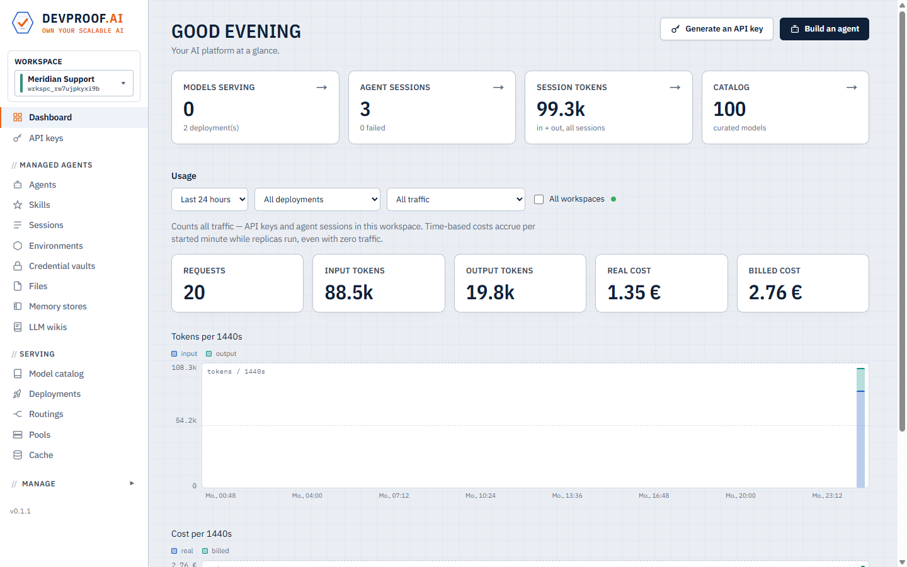
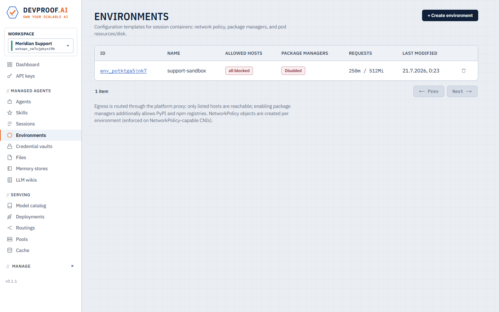
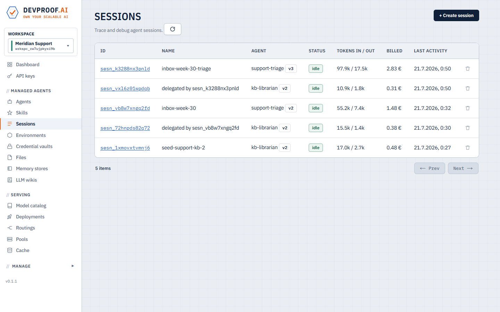

Self-hosted · Open models · Your cluster
LLM serving +
managed agents
on Kubernetes.
Run frontier-class open models and autonomous agents on infrastructure you control — from a laptop to a thousand-node cluster, with OpenAI- and Anthropic-compatible APIs.
Two ways in
One platform, two planes
Some teams come for the agents, some for the serving. Both run on the same Kubernetes control plane — use one, or both.
Managed agents
Autonomous workers with sessions, tools, skills, memory and shared wikis — each running in its own sandboxed pod, every step on the record. Point them at your models, or start here and treat the model as a detail.
Explore managed agents →Model hosting
Deploy open models like microservices: a curated catalog, one-click provisioning, autoscaling, scale-to-zero, and OpenAI + Anthropic compatible endpoints behind one gateway.
Explore model hosting →Use case 01 — Managed agents
Not a chatbot —
an autonomous worker
A managed agent is a model given a goal, a set of tools, and the freedom to take many steps to finish the job — it plans, runs code, checks its own work, and repeats until it's done. Feed it any files — spreadsheets, log files, diagnostics, screenshots, images — and package your procedures as skills that guide how the work gets done.

A real session, recorded live: the agent loads its triage skill, works an inbox export plus a diagnostics log, consults the team wiki, delegates a knowledge-base update — and the finished result opens as rendered markdown. Click any screenshot to expand.
Isolated, secure session containers
Every session runs in its own container with its own filesystem — no internet unless the environment allows specific hosts, secrets injected from credential vaults, never visible to the model or other tenants.
Delegation
Agents hand work to other agents as full child sessions — a triage agent delegates to a librarian, and the transcript links parent and child.
Full skill support
Anthropic-style skill packages with progressive disclosure: agents see an index and load only the files they need — versioned, shared per workspace.
Full MCP support
Connect any MCP server to an agent. Credentials come from the vault, egress opens automatically for the server's hosts, and a bundled registry covers common servers.
Wikis & memory
Shared LLM wikis — many readers, exactly one writer agent — plus per-agent memory stores that persist across sessions.
Idle-to-zero economics
Turns run as Kubernetes Jobs that cost nothing between messages. Sessions checkpoint and resume — even after failures.

The same session starts by loading its skill and the attached evidence files.

Agents are versioned configs: routing, tools, skills, environment, subagents.

An LLM wiki the agents maintain themselves — one writer, many readers.
Use case 02 — Model hosting
Deploy any open model
in one click
A curated catalog shows hardware requirements and estimated cost for every model before you run it. One click provisions a pool and routes an endpoint — or bring your own weights from Hugging Face, an internal registry, or a plain URL.

162 curated open models — parameters, context, GPU RAM, throughput — plus your own.
Elastic by default
Deployments autoscale on live queue depth and sleep to zero replicas when idle — requests during wake-up are held, not dropped.
One gateway, two dialects
Every deployment speaks the OpenAI and Anthropic APIs. Your existing tools switch by changing one line — the base URL.
Routings
Rule tables that resolve each request to a model — by context length, spend, token budgets, time of day, or a classifier — and can reject over-budget traffic with a clean error.
Local and remote together
External endpoints (OpenAI, Anthropic, OpenRouter, custom) sit behind the same gateway, keys stored server-side — mix self-hosted and cloud per rule.
Metered like a product
Per-key, per-agent, per-workspace usage and cost tracking, with real (infra) and billed (customer) ledgers kept separate.
No lock-in
Open weights, standard Kubernetes, and APIs your tools already speak — moving in (or out) is a base-URL change, not a rewrite.

Local pods and external endpoints, served side by side.

Clients call a routing like a model; rules decide where it lands.
Drop-in compatible
Point your stack at your own models
No rewrite, no new SDK, no vendor account — change the base URL.
Claude Code & Codex
Run your dev agents against models on your own cluster — same CLI, your endpoint.
OpenAI API
Anything built on the OpenAI SDK just works — flip the base URL and go.
LangChain & co.
LangChain, LlamaIndex, the Vercel AI SDK — unchanged, now pointed inward.
Or from code
Script everything
Anything the console can do, the REST API and the typed Python client can do too — create agents from CI, kick off sessions from a webhook or a cron job, and wire the results into your own product. A dozen lines end to end.
Why own it
AI stopped being a feature and became foundation — and open-weight models (GLM, Llama, Qwen, DeepSeek) now rival the closed frontier under permissive licenses. Owning the serving layer means your access · cost · uptime · scale are decided by you, not by someone else's pricing page. That's the whole argument; the rest of this page is the how.
How it works
A Kubernetes-native control plane
Six components, one chart. Runs anywhere Kubernetes does — the same manifests from a docker-desktop laptop to a thousand-node cluster.
Pick a model
Curated + custom, with hardware and cost up front.
Provision
CRDs become serving pods, autoscaled on live load.
Serve
OpenAI + Anthropic APIs, auth, metering — one endpoint.
Run
Sessions as Jobs: idle to zero, checkpoint, resume.

The console — your whole AI platform in one pane of glass, scoped per workspace.
Console
The web UI above: dashboards, live session transcripts, catalog, deployments, usage and billing — everything scoped per workspace.
Control plane
The platform API and session orchestrator. Workspaces, agents, sessions, files, wikis, keys — Postgres-backed, event-driven.
Operator
A Go operator that turns ModelPool and ModelDeployment
resources into serving pods, and scales them on live queue depth.
Gateway
One endpoint for every model, local or external: API-key auth, usage metering, routing rules, and wake-on-request for sleeping models.
Session runner
The per-session pod: an in-house agent loop with built-in tools (bash, files, web, MCP), checkpoints, and delegation — no vendor CLI inside.
Model catalog
A curated YAML catalog of open models with hardware profiles and context windows; add custom entries from any source.

Environments define the sandbox: egress allowlist, resources, persistent disk.

Every session with tokens and cost — including delegated child sessions.
Source
Get the code
Everything is in one repository — operator, control plane, console, session runner, charts. Install it from there, audit what runs next to your data, patch it yourself. Source-available under the Elastic License 2.0 (self-host freely, including commercially); the Python client is Apache-2.0.